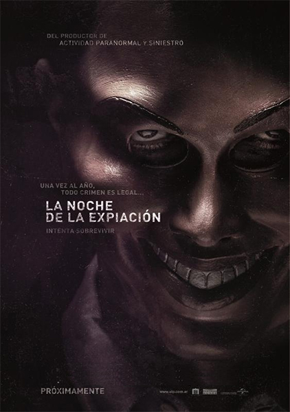

The Purge 1
|

|
Detalles
El crimen crecía y las cárceles no abastecían, por eso el Gobierno creó "La purga", una noche al año, durante doce horas, se permite cualquier actividad criminal, incluso el asesinato. Gracias a esto se ha logrado que la delincuencia sea mínima el resto del año. Pero durante una de las violentas noches, una familia debe decidir qué hacer cuando un extraño les pide ayuda.
|